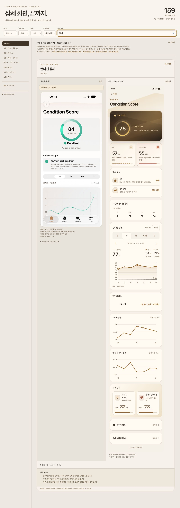
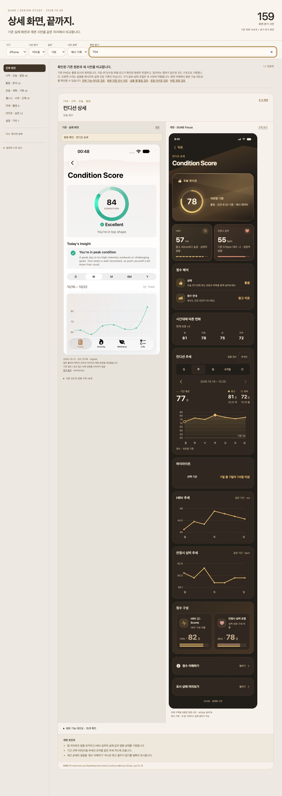

컨디션 상세 · T04
사용자가 검토한 브라우저 시안의 밝음·어두움 보존본입니다. 아래 PNG는 실제 앱 캡처가 아닙니다. 화면별 시안 데이터도 함께 보존합니다.
실제 앱은 같은 히어로·기여 요인·통합 추세·단일 설명 방향을 적용합니다. 시안의 고정70/30 비율은 실제 계산식과 달라 네이티브 구현에서는 실제 HRV Z-score·심박 조정·시간 조정을 표시합니다. 새 실제 앱과 이전 화면 비교
밝음 · 브라우저 시안

어두움 · 브라우저 시안
